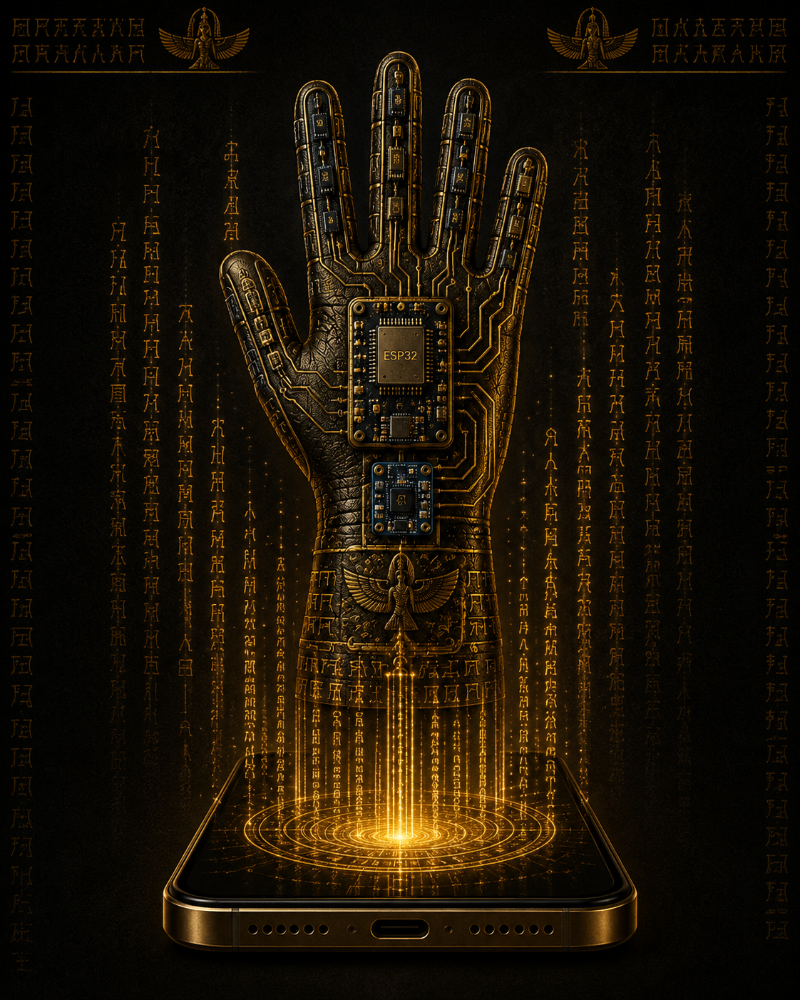
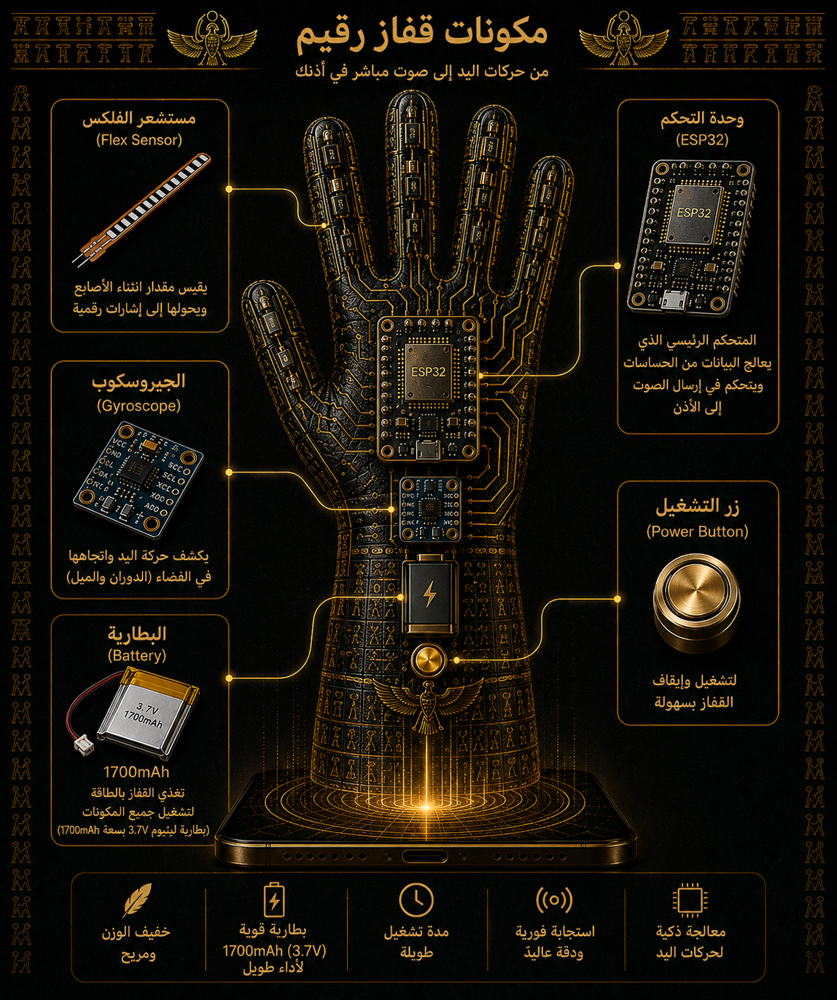

مشروع عراقي بتصميم مستوحى من سومر وبابل
القفاز الذكي لترجمة إشارات اليد إلى كلمات ونطق من الهاتف
Raqeem Glove هو قفاز ذكي يستخدم حساسات المرونة ووحدة ESP32 لقراءة حركة الأصابع، ثم يرسل نتيجة الإشارة عبر Bluetooth إلى تطبيق الهاتف. الهاتف يعرض الكلمة العربية وينطقها صوتياً باستخدام Text To Speech، بدون DFPlayer أو ذاكرة SD.

ملخص المشروع
فكرة القفاز باختصار
المشكلة
كثير من الإشارات اليدوية لا تُفهم بسهولة من الأشخاص غير المتمرسين بلغة الإشارة، لذلك يحتاج المستخدم إلى وسيط تقني يحول الحركة إلى كلمة مسموعة أو مقروءة.
الحل
قفاز مزود بحساسات مرونة على الأصابع يقرأ درجة الانحناء، ثم يعالج ESP32 القيم ويتعرف على الإشارة، وبعدها يرسل كود الكلمة إلى الهاتف عبر Bluetooth.
النتيجة
عند تنفيذ حركة معيّنة تظهر الكلمة في تطبيق الهاتف وتُنطق صوتياً من الهاتف، مما يجعل التواصل أسرع وأكثر وضوحاً.
تفاصيل القفاز
ما الذي يفعله Raqeem Glove؟
يعتمد القفاز على قراءة وضعية الأصابع الخمسة. كل حساس مرونة يعطي قيمة رقمية تختلف عند فرد الإصبع أو ثنيه. بعد المعايرة، يتم تحويل هذه القيم إلى نسب أو حالات مثل: مستقيم، نصف انحناء، أو منحنٍ. بعد ذلك تتم مطابقة الحركة داخل ESP32، ثم يرسل المتحكم كوداً ثابتاً إلى تطبيق الهاتف مثل HELLO أو YES أو HELP ليحوّله التطبيق إلى كلمة عربية وصوت.
قراءة الأصابع
قياس انحناء الإبهام، السبابة، الوسطى، البنصر، والخنصر.
تحليل الحركة
استخدام حدود معايرة لتحديد حالة كل إصبع.
الإرسال للهاتف
إرسال كود الإشارة عبر Bluetooth إلى تطبيق الهاتف.
النطق من الهاتف
التطبيق يعرض الكلمة العربية وينطقها باستخدام Text To Speech.
أمثلة كلمات يمكن دعمها
مرحبا
أحبك
لا
موافق
أنت
سؤال
هذا ممتاز
عمل جيد
لست متأكد
أراك لاحقاً
هذا رهيب
أتمنى لك حياة سعيدة
الجانب التقني
المكونات والتوصيلات
وحدة التحكم
ESP32 لقراءة الحساسات، معالجة القيم، ثم إرسال كود الإشارة للهاتف.
حساسات المرونة
خمسة Flex Sensors مثبتة على الأصابع الخمسة لقياس درجة الانحناء.
تطبيق الهاتف والصوت
النطق الصوتي يتم داخل الهاتف باستخدام Text To Speech بعد وصول الكود من القفاز.
Bluetooth Classic
الاتصال بين ESP32 والهاتف يتم عبر Bluetooth لإرسال رموز ثابتة وسهلة القراءة.

المسار الحالي
القفاز يرسل، والهاتف يعرض وينطق
قراءة الأصابع
حساسات Flex ترسل قيم الانحناء إلى ESP32.
تعرف الإشارة
ESP32 يقارن القيم بالمعايرة ويحدد الإشارة المناسبة.
إرسال للهاتف
يرسل ESP32 كوداً ثابتاً عبر Bluetooth Classic إلى تطبيق Android.
عرض ونطق
التطبيق يحول الكود إلى كلمة عربية، يعرضها على الشاشة، وينطقها من الهاتف.
آلية العمل
من حركة الإصبع إلى صوت من الهاتف
حركة اليد
المستخدم ينفذ إشارة معينة بأصابعه.
قراءة الحساسات
كل حساس مرونة يرسل قيمة analog إلى ESP32.
المعالجة
البرنامج يقارن القيم بحدود المعايرة ويتعرف على الإشارة.
الإرسال والنطق
الكود يُرسل للهاتف، ثم يحوّله التطبيق إلى كلمة عربية وينطقها صوتياً.
هوية التصميم
يعتمد الشكل البصري على ألوان الجلد الداكن، النحاس، الذهب، الطين المحروق، والزخارف المسمارية. الهدف هو الجمع بين تقنية حديثة وروح حضارة العراق القديم، ليظهر القفاز كأداة مستقبلية تحمل هوية محلية واضحة.
ملاحظات تطوير مهمة
ما الذي يحتاجه النموذج ليصبح أكثر ثباتاً؟
- تثبيت الحساسات جيداً على قفاز فعلي حتى لا تتغير القراءات أثناء الحركة.
- إعادة المعايرة بعد التركيب النهائي لأن وضع الحساس يتغير من تجربة إلى أخرى.
- فصل أسلاك الطاقة والإشارة وتنظيمها لتقليل التشابك والقراءات غير المستقرة.
- اختبار كل إشارة عدة مرات قبل اعتمادها داخل البرنامج النهائي.
- اختبار اتصال Bluetooth مع تطبيق الهاتف والتأكد من أن النطق يتم من الهاتف فقط.
فريق المشروع